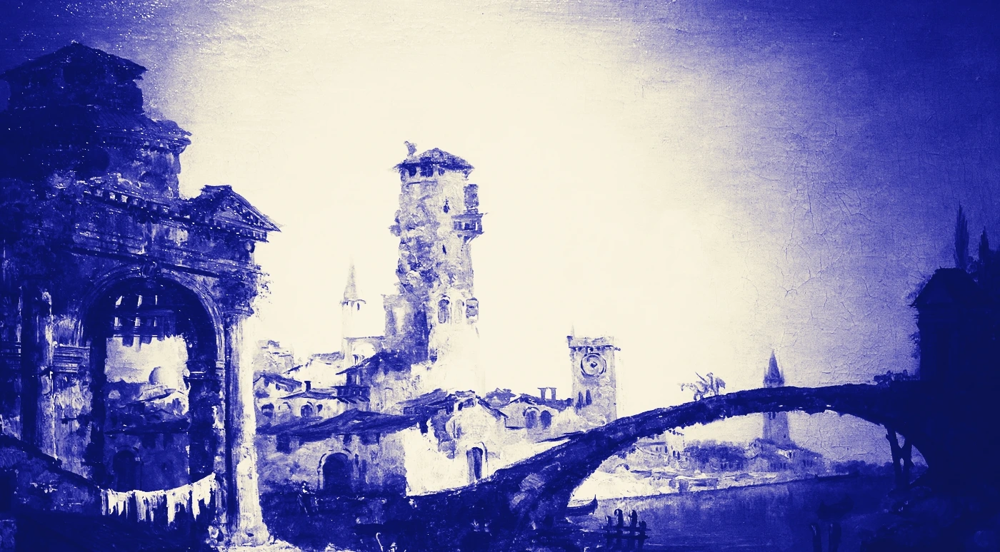
You saw a book. Then you forgot it.
Buki reads the cover, not the caption, and files it on a shelf that is yours.
Ten catches free. No account, no card.
Right-click a cover. That is the whole thing.
No tab to open, no title to type, no app to switch to. Three seconds from seeing a book to owning it.
01 You right-click the picture
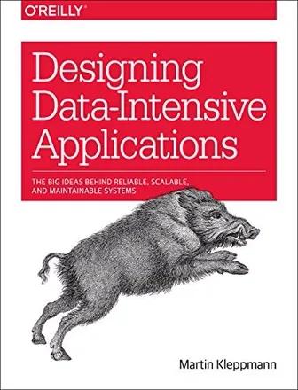
The cover and the words around it go to a vision model together, because the text beside a cover is often what makes a hard one legible.
02 Buki says what it found
Caught
The guess is confirmed against OpenLibrary rather than trusted. One photo can hold several books, and each one it can read gets its own decision.
03 It is on your shelf
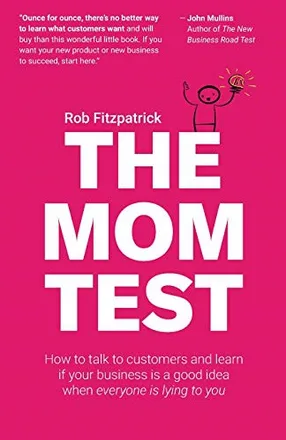
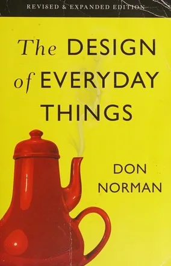
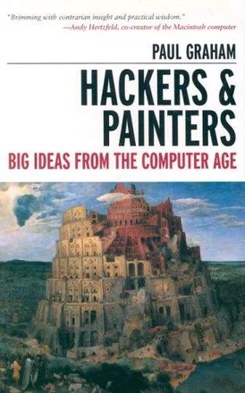
4 books in Now · 87% kept
Now, Next, Someday. Nothing reaches the shelf until you say so, and every book keeps the page you caught it from.
A shelf, face out, that looks like a shelf.
Not a list of links. Not a folder you will never open. Covers you recognise on sight, filed under Now, Next, Someday and Read, each one still carrying the page it came from.
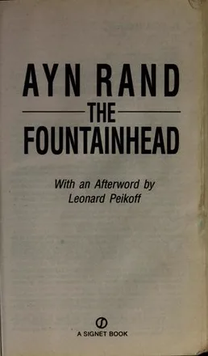
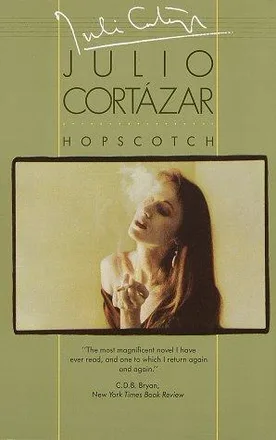
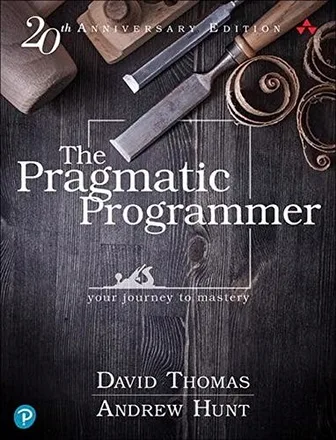
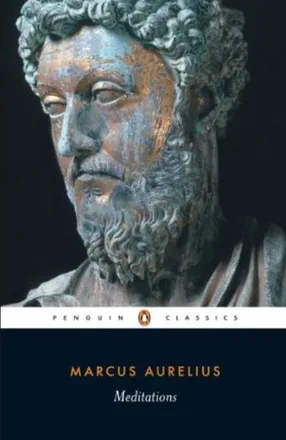
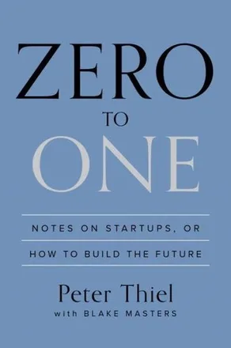
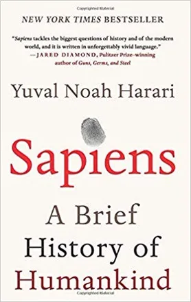
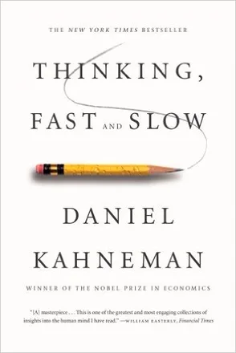
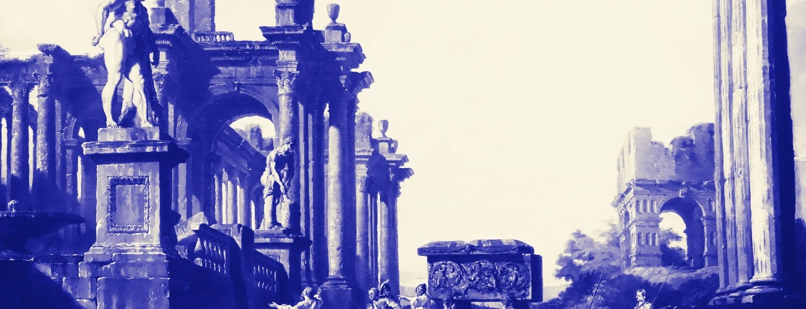
Every book scanner assumes the book is in your hands.
Buki is for the ones you will never hold. A cover in a post, a spine in a video thumbnail, a paperback on someone's desk in a photograph. If it is a picture in a browser, it is a book you can keep.
A book with no cover art still gets a cover.
Catalogues have no art for a great many books, so Buki draws the rest: a dyed board, two stamped rules, and a weave hashed from the book itself. The same book always gets the same binding, and no two books get the same one.
These six are drawn right now, in your browser, by the same code that ships in the extension.
Ten catches to find out. Then four dollars.
Reading a cover from a photograph is the one thing that costs real money to run. Everything else is free forever, including the shelf.
Free
$0forever, no card
Enough to find out whether this belongs in your browser.
- Ten cover photographs read for you
- Unlimited catches from a shop link
- The whole shelf, kept forever
- Bring your own key and read unlimited covers, free
- Export to Goodreads and StoryGraph
No account. Nothing to cancel.
Get Buki freePro
Most people
$4a month, or $29 a year
For when you stop thinking about it and just catch books.
- Unlimited cover reading, with no key to go and fetch
- Faster, and it does not throttle
- Export to Goodreads and StoryGraph
- Sync and backup when it ships, included
- One person pays for the model instead of you holding a key
Cancel whenever you like. Every book you caught stays on your shelf.
Get Buki freeTake Free if you already have a Google AI Studio key, or you only ever catch books from shop links. It is not a crippled tier. With your own key the cover reading is unlimited and it never expires.
Take Pro if you would rather not hold an API key at all. That is the whole difference. Four dollars is roughly two coffees a year less than the cheapest reading tracker, and there is no account to make.
Your shelf never leaves your computer.
When you ask Buki to read a cover, the picture goes to Buki and on to the vision model, and the title it finds goes to OpenLibrary to confirm the book is real. That is everything that leaves. No account, no tracking, no analytics, and the shelf itself is stored in your browser. Read the privacy policy.
Saved books carry a Buy link. As an Amazon Associate, Buki earns from qualifying purchases at no extra cost to you. It appears only on books you have already chosen to save, and it never changes which books Buki shows you or in what order. You can point it at Bookshop.org instead.
Before you ask.
- Google Lens already does this, free.
- Lens tells you what the book is. It does not keep it. Close the panel and the answer is gone. Buki is the shelf, not the answer.
- Why pay when the source is open?
- You never have to. Bring your own recognition key and read as many covers as you like, forever. Pro is for people who would rather not hold a key at all.
- What happens if I stop paying?
- Every book you caught stays, opens, moves between piles and keeps its Buy link. The shelf is on your computer and it is yours. Only new cover reading stops.
- Will it get a book wrong?
- Sometimes, which is why nothing is saved without you choosing a pile. Every reading names its evidence, and the shelf shows how often it was right.
- Does it work outside X?
- Anywhere there is a picture. Reddit, a newsletter, a blog, a video thumbnail, a friend's photo of their desk. The right-click menu is the whole interface.
- Do I have to make an account?
- There is no account to make. Install it and catch a book. Paying adds a licence key to the extension and nothing else.
The next book you see is the one you will forget.
Unless it is on a shelf. Ten catches, no card, no account, about four seconds to install.
Free. Then $4 a month if you keep using it.
Plates: Michele Marieschi, Capriccio with Ruins and an Antique Arch, and Giovanni Paolo Panini, An Architectural Capriccio of the Roman Forum. Both public domain, from Wikimedia Commons, duotoned for this page. Book covers via OpenLibrary, shown to identify the books they are the covers of.